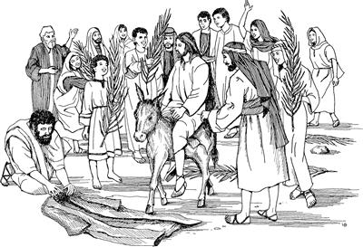
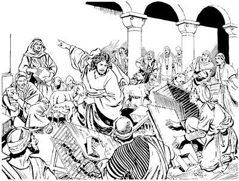

Yesus as Yerusalem wa'iogti, Allahri Mem Ae aramag Allah yubu ambarelamsiogha
11:1-12:44
Yesus nimiri kiplamekpa, as Yerusalem wa'iogha
(Matius 21:1-11; Lukas 19:28-40; Yohanes 12:12-19)
11
1 Yesus el yubu ka'ero neleptopnangap as Yerusalem peramag palamekti, yim Zaitun tamag as Betfageap Betaniaap piek. Piekti, Yesusti el yubu ka'ero neleptopnang phende pogto 2 aruklamsiogti, “A'un whingag as aneag pururom. Purumundi wa'alamtumun abeneko pere tilamtumunba, pham keledai me nhon kerekamika iptururom. Pham keledai ene alibag nimi anam pulingkirop kom pham kerektoba iptumundi, pham ane kobea lopto payarurom. 3 Nimiri a'unag, ‘Sa'a sembe a'undi kobea loplamtom?’ aro hailogsikpana, a'undi ambatsururomnena, ‘Nuni nu saelba uhiropne poneko teko sel tagha kobea lopnamdi, pabalamnam. Usa nuniri, ‘Samoro pabururom’ sele tanena, ‘Nen pham ene elem uro yalul,’ sururom,” seog.4 Wene seogpa, el yubu ka'ero neleptopnang phende abeneko pirekti, pham keledai yemne aneko ae ina siram peramag kerekameka iptek. Iptekti, pham keledai yemne aneko kobea loplamdekpa, 5 nimi taneko sekamek nimiri sinag hailamsiekti, “Sa'a sembe a'undi pham keledai ane loplamdom?” aro haibahiek.
6 Wene aro haibahiekpa, sikini Yesusti yubu ambatsiogha sunsunum uro ambatsirekpa, nimi tanekori, “Hae pabururom,” seek. 7 “Pabururom,” seekpa, pham keledai yemne neneko Yesusag pabirekti, sikinenge ag nongag enektop ag kwiripto pham keledai alibag yangkaekpa, Yesus pham keledai alibag pulingkiog. 8 Pulingkiogti, yalamog inaag aneko nimi tanekori, “Nimi nubunge yalamlaba, kibukap,” aro Yesus pinep ina yangalamek. Nimi nenneri sindi nongag enektop ag kwiripto inaag yangalamekpa, nenneri aweag agha kal ma'al kokto payingkina inaag yangalamek.

9 Ina yangaro palamekti, Yesus whingag sip palamek nimiap wailag sip agha neleplamsiek nimiap tanekori yubu mikip uro haum alamekti,
“Nu Taluro Saelba Uhiropne kiplamsut!
Nuni Allahri poglaba, yalamlange poneko paliag nenelamsut!
10 Nunisag Daud ponekori Israel nimi saelbamsiog saog uro
amik yalamlange ponekori wali saelbamsilul.
Im Paliagneri nu taluro saelbamsilne poneko omeklamsut!”
seek.
11 Wene alamekpa, Yesus as soro kalurop as Yerusalem piogti, Allahri Mem Ae aramag wa'iogti, ni taneko wamogne keme warekaog. Keme warekaog aghana, inipna peram taogpa, el yubu ka'ero neleptopnang aobare nangap as Betania piek.
Yesusti kal ara wabaogha
(Matius 21:18-19)
12 As Betania mabeka ae lukunap, “Yerusalem samoro pukap” aro as Betania lanaro palamekpa, Yesus kwaneng yo sembaog. 13 Kwaneng yo sembaogti, weag agha tilamogpa, kal ara kwarang saog kal eneko ma'al saroba tibogaog. Tibogaogti “Wana mauamla to kembanun,” aro piog. Piog aghana, kal ara wana maurop li kom ane sembe, kal wana orog wamogti, ot ma'al aghabog saroba wamog. 14 Ma'al aghabog saroba wamogpa, Yesusti ibogti, kal ara kwarang saog kal enekoag Yesusti walamogti, “Sumene agha alniro andi wana mauroba nimi nhondi babe tukukang kom,” aro walamogha elag neleptopnangdi yubu tam ane ka'ebaek.
Yesusti Allahri Mem Ae aramag wa'iogti, malia ulamek nimi yag lambahiogha
(Matius 21:12-17; Lukas 19:45-48; Yohanes 2:13-22)
15 Yesus el yubu ka'ero neleplamek nimiap Yerusalem piekti, Yesus Allahri Mem Ae aramag wa'iog. Wa'iogti kemelamsiogpa, nimi maikno wa'ina pail alameknena, “Nimiri Allah sembe tatnepne yingkirop nimiri kamna kapto tobukang,” aro pail alamekpa, kamna kapto tolamek. Sindi kamna kapto tolamekne sembe Allahri Mem Ae salerop nimi tanekori seneraglamekti, “Nimi niri kal ma'al tane sunsunum komdi, nun Yahudi nimiri kal ma'al agha kamna kapto tolamukang,” senelamek. Ane sembe, sin sunsunum urop kal ma'al salerop nimi kwaria soroba peramag pukamekpa, nimiri kal ma'al tatto tol alamekti, kamna kapto tolamekpa, Yesusti ipsiog. Ipsiogti, kal ma'al tarel talamek nimi pukamekag Yesusti kwaria yamoro epsiog. Nimiri winang yalma kamna kapto payalamek nimi puka urobag babe Yesusti yamoro epsiogti, sindi kamna kapto payalamek nimiap tolamek nimiap yag lambahiog. 16 Yag lambahiogti, “Nimi nhondi babe Allahri Mem Ae aram toman kamna kapto toroba payaheng kom,” aro irikahiog.
17 Wene aro irikahiogti, Yesusti nimi tanekoag yubu ambarelamsiogti, “Samenag Allahri yubu lebogne nimiri mome toro pibogne undo:
‘Nari ae anena, nimi ni tala-tala urop nimiri Imagne Ponekoag molona molba urop ae wamlul,’ seog.
Aghana a'undi ulamlomneag agha ‘Nimi ohiro haoghaba torop nimi tognop tangtobag' saog nembaom,” aro Yesusti wabahiog.a

18 Yesusti wene seogpa, memnang Yahudi nimiri sae agha Allah sembe pairopnang sikiniyaboap, Musari samenag mome toro pibog yubu ambatsiropnangap tanekori ka'ebaek. Ka'ebaekti log senelamekti, “Yesus nenekori yubu ambarelamsilne ka'elamang nimi niri el sembe ‘Mane agha ambarelamsil' aro yeng senelamang,” aro Yahudi nimi sembe nubu nangdi log senelamek. Log senelamek ane sembe sin wana yo tahiogpa, “Yesus welaro obukap?” aro ina elamek.
19 Imbaogpa, Yesusap el yubu ka'ero neleptopnangap Yerusalem laploa piek.
Yesusti “A'un wana phende uro seneragna koma Allahag molbalulom,” aro ambatsiogha
(Matius 21:20-22)
20 Ae kwelekaogpa, lukunap Yerusalem samoro palamekti, Yesusti sam wabaog kal ara kwarang saog kal eneko tam toman kembi-kembi palamekti kemelamekpa, kal eneko yarengap ni ul taog. 21 Kal ul tangtoba Petrusti kembaogti, Yesusti kal ara wabaogha sembe seneraghogti, yubu lelamogti, “Nai, nu yubu amohinne wamlamne, kal ara ambuhum wabaom kal aneko ya'ag ul tal,” seog.
22 Wene seogpa Yesusti, “Allahag wana palilapmundi, ‘Sikne’ aro seneraglamlulom! 23-24 Nari a'un sik uro ambarelamsinne wali ka'ebalulom. A'undi Allahag mololapmundi, wana nhonog uro mololamlulom. A'undi Allahag mololapmunneag agha ‘Sik uro yabilul,’ aro mololapmun tanena, sik uro yabilul. Sunumna nhon ambatsinun. Nimi etneri wana phende seneragna koma eldi wanaag, ‘Nuni Allahri sik ualul,’ senenneag agha yim eneag aruklamleri, ‘Ko'oro mag longorop mag laut nubungeag tobogholtal pi,’ aro arukale tanena, sik uro yabilul. 25 A'undi Nuni Allahag molona mololapmun aghana, a'undi wanaag ora nimi sembe wana mali sembamsimun tanena, nimi neneko sembe ‘Malia uaneo,’ sembamunne samenag orog nembamun taneogna, Allahag molona molbalulom. Tam orog nembamunne, ‘Nani Allahri nari malia ulamnonge wailag nembalul,’ aro ora nimiri a'unag malia ulamsiikne orog nenelapmun taneogna, Allahag molona mololamlulom. 26 Aghana ora nimiri a'unag malia uropne sembe a'undi tam wailag nemban koma Allahag molona molbamun tanena, Nuni Allahri babe a'undi malia uropne wailag nembalul kom,” aro ambatsiog.
Yahudi nimi sembe wenehirop nangdi Yesusag, “An etneri mikip nembagheo pere agha undo unulamlam?” aro haibaeka
(Matius 21:23-27; Lukas 20:1-8)
27 Wene aro ambatsiogti, tipto palamekti, Yerusalem samoro piek. Yerusalem samoro piekti, Yesus Allahri Mem Ae aram toman kemeroa yabalamogpa, memnang Allah sembe pairop nang sikini yaboap, Musari “Undo-undo unulamlulom,” aro mome toro pibog yubu ambatsirop nangap, Yahudi nimi sikiniyabo wenehirop nangap Yesusag hailaek. 28 Sikin yaekti Yesusag hailamekti, “Andi ulamlamne, etneri mikipne anag pibori, ‘Unualulam,’ aro pogkeoba, ulamlam?” aro haibaek.
29 Wene aro haibaekpa Yesusti, “Nari babe a'unnag haibahinun. Haibahinenge sembe a'undiba lag phoro ambatnumun taneogna, nari babe, ‘Etneri pogneoba ulamna,’ aro ambatsunun. 30 A'undi wela senelamlom? Yohanes maghag pelengehiropne ponekori ulamongena, elna etneri poghoba, nimi maghag pelengelamsio senelamlom? Nimiri to, Allah Imagne Poneri to? Ambatne,” seog.
31 Wene seogpa, sin mamun tognoro hailtalamekti, “Nuri elag samoro, ‘Allahri Yohanes poghoba, yubu ambatto maghag pelengelamsio,’ sehabe tanena, Yesusti nunag haibahihori, ‘Sa'a sembe Yohanesti yubu ambatsionge sembe sik sembaom kom?’ seho,” aro sin mamun yubu lelamek. 32 Sin nubunang tanekori Yohanesag sik sembaek kom aghana, yog nimi ni tanekori Yohanes sembe, “Nuni Allahri silimu yubu tiptopne wamo,” senelamek. Nimi maiknori undo senelamek ane sembe, sin nubunangdi, “ ‘Nimiri Yohanes pogho,’ sebeag,” aro nimi sembe log senelamek. 33 Nimi sembe log senelamekti, “Yohanes maghag pelengehiropne poghonge, etneri pogho nu ekon,” seek.
Wene seekpa Yesusti, “Undop pagha tanena, nari babe a'unag, ‘Eldi pogneoba ulamna,’ aro lag phoro ambatsinun kom” seog.